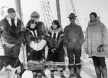
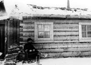
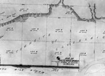
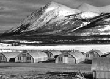
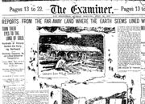
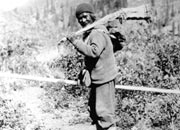
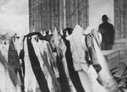

Les premiers étrangers à fouler le sol, les commerçants de fourrures, sont arrivés dans le territoire au milieu du XIXe siècle. Leurs explorations ont attiré l’attention du monde extérieur. Peu de temps après, des chasseurs de baleines, des prospecteurs, des commerçants et des scientifiques ont commencé à arriver.
Il s’agissait d’une nouvelle ère : le temps des échanges. Les nouveaux venus et les Premières nations du Yukon ont eu de nombreuses occasions d’apprendre des uns des autres. Les prospecteurs et les commerçants ont suivi les routes des Autochtones, engagé des porteurs autochtones et adapté les vêtements et les outils locaux. Les Premières nations avaient accès à des nouveautés : armes, matériaux, ustensiles, vêtements et nourriture. Cela a bouleversé leur vie en profondeur. Le changement a aussi entraîné de nouveaux problèmes : maladies, conflits, pauvreté, criminalité et éclatement des familles.
Avec la présence de nouveaux arrivants, nombre desquels étaient des Américains, le gouvernement du Canada s’est rendu compte qu’il fallait assurer l’ordre dans cette région éloignée. Le gouvernement n’avait pas conclu de traités avec les Autochtones de la place comme il l’avait fait ailleurs au pays. En 1894, on a envoyé la Police à cheval du Nord-Ouest comme premier indicateur officiel que le Yukon faisait partie du Canada.
À la suite de la découverte de l’or dans le Klondike, les adaptations jusque-là graduelles se sont précipitées. Des milliers de chercheurs d’or se sont rués au Yukon, portant menace aux ressources et aux relations existantes. Les nouveaux services et entreprises, l’émergence et le pouvoir des nouveautés ont radicalement transformé le Yukon. La population du Yukon a continué à changer et à se diversifier durant la Seconde Guerre mondiale et même jusqu’à aujourd’hui.
«À notre départ, le jeune officier m’a dit qu’en mai dernier 18 000 hommes avaient passé le poste (de Tagish) et que j’étais la 631e femme. Notre embarcation portait le numéro 14405.»
Martha Louise Black (juillet, 1898)
Passer au tableau Transports et communicationsNouveau arrivants
(Ci-dessus) Troupeau de Jack Dalton près de Montague (sans date). Jack Dalton a tracé un sentier de la côte du Pacifique jusqu’aux terres intérieures, suivant une route de commerce des Tlingit de la côte. Il s’agissait de la seule piste de la Ruée vers l’or qui permettait le déplacement de bétail.
AY, collection Puckett, 82/344 nº 33
L’équipage de la baleinière Maid of Orleans pose avec des femmes inuit (vers 1923). Remarquez les vêtements des chasseurs de baleines.
AY, collection Pasley nº 9211
Le sergent M.-H.-E. Hayne de la Police à cheval du Nord-Ouest à l’extérieur de ses quartiers à Fort Constantine (1895). On a construit le fort durant cette année, à l’embouchure de la rivière Fortymile et il s’agissait de la première installation du gouvernement au Yukon.
AY, collection Strickland nº 9404
À mesure qu'affluaient de nouveaux arrivants, les agglomérations devenaient mieux établies et organisées. Il s’agit d’un des premiers levés de Whitehorse (vers 1899).
Exposition des Archives du Yukon, «Whitehorse Remembered», 1975
Durant la construction de la route de l’Alaska, les huttes quonset servaient de domicile aux équipes de construction. Carcross (vers 1943).
AY, collection Finnie, 81/21 nº 148.11
Dès qu’elle fit la manchette, la découverte d’or au Klondike a fait se tourner tous les regards vers le Yukon. Édition du matin de l’Examiner de San Francisco, dimanche 18 juillet 1897.
AY, collection de microfiches
Homme de Rampart House muni de sa carabine dans un étui de cuir (1911). Les Premières nations se sont adaptées immédiatement aux nouvelles technologies et aux nouveaux matériaux des nouveaux arrivants.
Archives de la Compagnie de la Baie d’Hudson, Archives provinciales du Manitoba 1987/363-1-42/8
Potlatch à Teslin (vers 1942). Les Premières nations étaient souvent affectées par les maladies introduites par les arrivants. Dans les années 40, il y a eu une épidémie de diphtérie à Teslin, causée par la présence de soldats durant la construction de la route de l’Alaska.
AY, collection F. Johnston, 79/119 nº 106